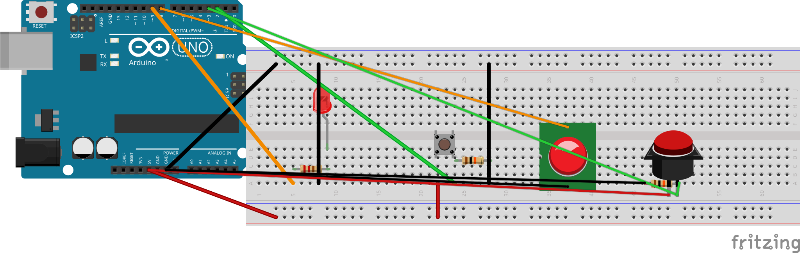

מעצבים וריאציה משלכם — שני שחקנים זה מול זה, או משחק ניקוד על פני חמישה סבבים — ובונים אותה מאפס.
ממלאים את המתכנן, בונים, ומציגים. הכול נשמר במחשב הזה — אפשר לחזור ולערוך בכל רגע.
קודם בוחרים וריאציה — לוחצים על אחת:
מוסיפים כפתור שני על חיבור דיגיטלי 3 עם נגד הורדה משלו. הלד נדלק, מתחרים מי לוחץ ראשון, והמשחק מכריז מי ניצח.
שחקן אחד, חמישה סבבים. המשחק שומר ניקוד (זמן מצטבר או נקודות לפי מהירות) ומציג תוצאה סופית. בלי חומרה חדשה.
מה קורה מההתחלה ועד הסוף? דוגמה (שני שחקנים): "הלד מחכה 2–5 שניות ונדלק. הראשון שלוחץ מנצח את הסבב. מי שלוחץ לפני שהלד נדלק — מפסיד. הזמזם מצפצף צפצוף ניצחון, והצג הטורי כותב מי ניצח."
לד לצד המנצח, צפצוף בזמזם, הודעה בצג הטורי — או שילוב. אפשר להשתמש בכל מה שכבר על הברדבורד.
וריאציית שני השחקנים: כפתור נוסף + נגד הורדה 10 קΩ נוסף. וריאציית הניקוד: בדרך כלל כלום. רכיב לא רגיל? שואלים את המורה קודם.
מציירים את החיווט על נייר, ואז מחווטים. לשני שחקנים: כפתור שני לרוחב החריץ — צד אחד ל-5 V, השני ל-חיבור דיגיטלי 3 ודרך נגד הורדה 10 קΩ (חום · שחור · כתום) ל-GND. בדיוק כמו הכפתור הראשון, רק על חיבור דיגיטלי 3.

וריאציית שני השחקנים: כפתור שחקן 2 על חיבור דיגיטלי 3 עם נגד הורדה משלו ל-GND, לצד הכפתור הקיים על חיבור דיגיטלי 2. הלד והזמזם נשארים על חיבורים 9 ו-8.
החיווט מוכן, ומצלמים תמונה (או מחליטים שלא רוצים תמונה).
קלוד קוד במצב דיאלוג חופשי — אין קוד מוכן מראש, בונים מתוך התיאור שלכם. אותה משמעת של (א)(ב)(ג): מתארים את הבעיה לפני שמבקשים פתרון.
דוגמה (שני שחקנים): "אני בונה משחק זמן תגובה לשני שחקנים. לד על חיבור דיגיטלי 9, זמזם על חיבור דיגיטלי 8, כפתור שחקן 1 על חיבור דיגיטלי 2 וכפתור שחקן 2 על חיבור דיגיטלי 3, לכל אחד נגד הורדה 10 קΩ. אחרי השהייה אקראית הלד נדלק, הראשון שלוחץ מנצח, והצג הטורי כותב מי ניצח. תוכל לעזור לי לכתוב את הקוד?"
אם לא — מה שונה? כותבים, חוזרים לקלוד קוד עם (א)(ב)(ג) חדשים, ומשפרים. התוכנית יכולה להשתנות תוך כדי — זה בסדר גמור.
באגים לא יציבים הם בדרך כלל חיווט (ג'אמפר שהתנתק, נגד הורדה חסר לכפתור השני) או תזמון (השהייה קצרה/ארוכה מדי, לחיצה מוקדמת מדי).
כשמרוצים (או כשמחליטים שזה טוב מספיק להיום), קוראים למורה — ועדיף לשחק סבב אמיתי מול חבר או המורה.
מסבירים במשפט-שניים מה זה עושה ולמה בניתם ככה. אם רוצים — מצלמים ושומרים בתיקיית פרויקט 2 ב-Google Drive.
עיצבתם, בניתם ותכנתתם וריאציה משלכם של משחק זמן תגובה מאפס — מרעיון ועד משחק עובד.